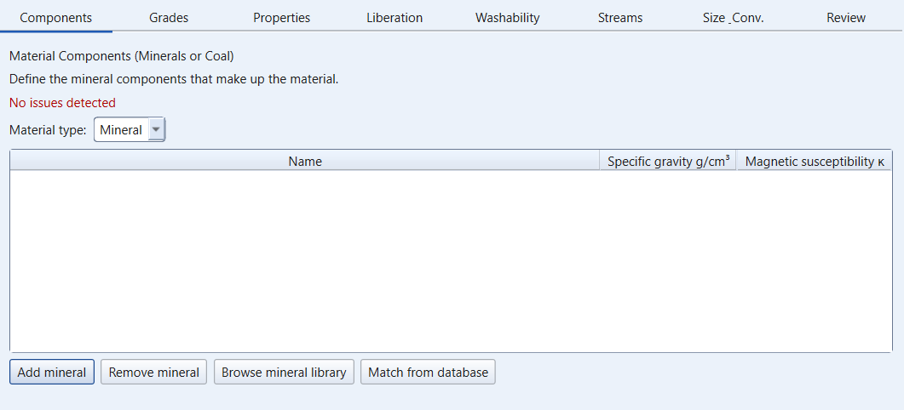
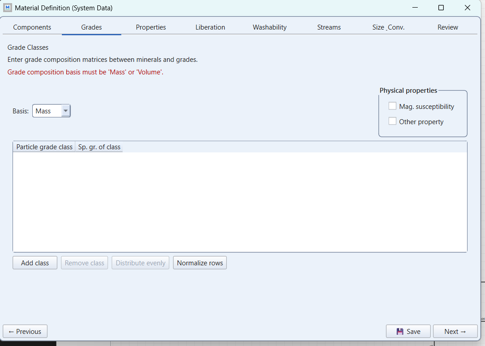
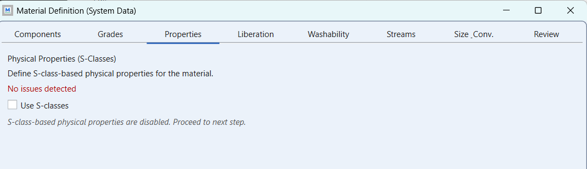
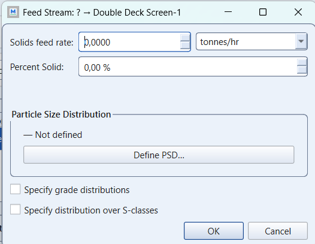
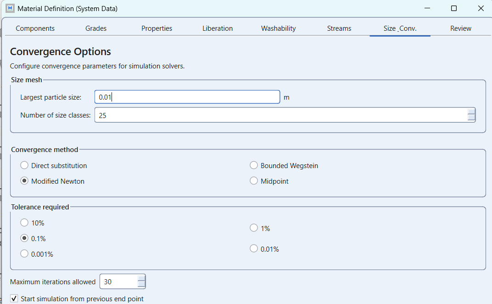
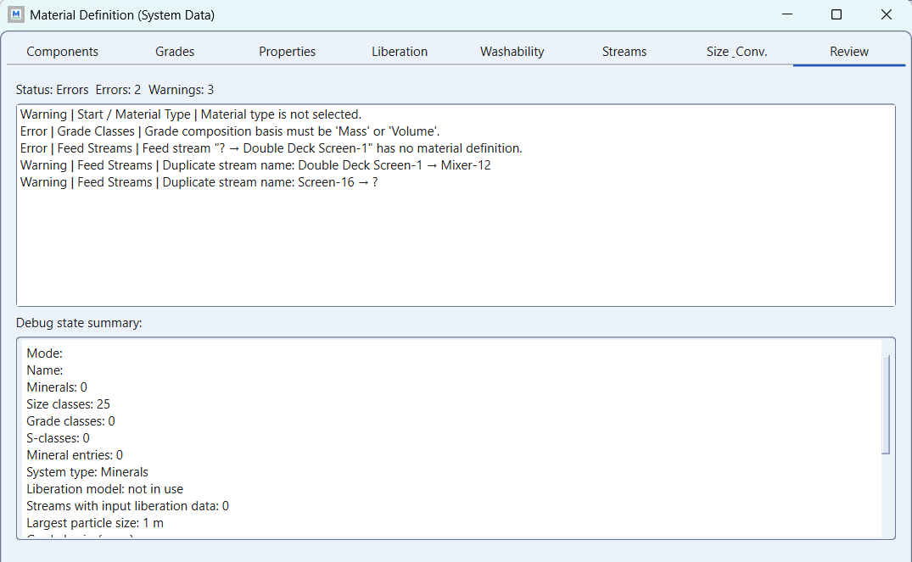

Assignment 4, step by step: the flotation circuit
module 5 · King 9
Read in King: King 9 · Flotation · p. 277
On this page
What they ask
The sheet is Assignment_4.pdf (Bertil Pålsson, 2010-12-02, two pages plus an appendix). A rougher-scavenger flotation bank of a complex sulphide concentrator was sampled; you fit kinetic models to the data, rebuild the bank in MODSIM, close it, add a cleaner, and test it. Point by point:
1. The bank (section 1.1). Four rougher cells and four scavenger cells of 14 m³ each, of which about 15 % is air. Fresh solids feed 92 t/h at 40 weight per cent solids; because of recycling the actual feed to the first rougher cell is higher. The dilution ratio of every froth product is 1. Aeration about 0.3 Nm³/m³ on average, except the last cell, where one "blows off". The mineralogy may be simplified to chalcopyrite (4.2 g/cm³), sphalerite (4.0), galena (7.5), pyrite (5.0) and a gangue phase of everything else at 3.0 g/cm³.
2. The appendix. Cell-by-cell cumulative fractional recoveries of the five minerals against flotation time (3.97, 8.03, 12.21, 14.36 min for the rougher cells; 16.55, 20.91, 25.37, 29.90 min for the scavenger cells); the solids flows and mineral grades of seven streams (mill feed 92.1 t/h, feed to flotation 112.5, rougher middling 96.4, rougher concentrate 16.1, tail 87.6, scavenger concentrate 8.8, final concentrate 4.5, with % chalcopyrite, sphalerite, galena and pyrite); sieve data with a maximum size of 250 µm.
3. The exercises. 1.1.1 estimate and for each mineral in both stages with a statistics program or the course's Excel sheet AccCellRecGrade: (1) fit the rougher on the combined table, with ; (2) rebuild the table for the scavenger alone, with times and relative recoveries counted from the last rougher cell; (3) fit the scavenger. 1.1.2 open circuit: (4) build the bank in MODSIM, split into rougher and scavenger stages, with a suitable advanced flotation model, direct simulation; (5) adjust until the result agrees fairly with the data; (6) document; (7) save. 1.1.3 half-closed circuit: (8) return the scavenger concentrate to the head of the flotation; (9) adjust if needed; (10) document and save. 1.2 whole circuit: add a single cleaner stage as a flotation column of 10 m³ pulp volume and 20 % air, under a new name, starting from the rougher parameters; (11) adjust until all stages agree fairly; (12) document. 1.3 sensitivity: (13) feed rate up by 50 %; (14) feed copper grade doubled at the expense of the pyrite.
4. The report (section 2). For each sub-simulation: a flowsheet with solids flows, water flows, weight per cent solids and % Cu on all streams; tables of model parameters and machine reports; a discussion, "especially analyses of why something does not work".
How the work flows
The sheet numbers fourteen items, so it looks like fourteen things to do. It is one fit and three circuits, each adjusted to fair agreement with the same table, then two runs with everything frozen. Four things have different roles:
- Fixed for every run: the appendix (cell-by-cell recoveries, the stream table, the sieve data), the bank as described (4 + 4 cells of 14 m³ with 15 % air, froth products at dilution ratio 1, aeration 0.3 Nm³/m³), the five minerals with their densities, and the fresh feed of 92 t/h at 40 % solids with the mill-feed grades.
- Chosen once: the advanced flotation model from MODSIM's list, how you turn cell volume into pulp volume and residence time, the tool you fit with (Solver or AccCellRecGrade), and where the cleaner tail goes in 1.2, which the sheet leaves to you.
- Turned outside MODSIM (1.1.1): and per mineral, per stage, on the appendix data. You stop when each curve sits on its points with .
- Turned inside MODSIM (1.1.2, 1.1.3, 1.2): the model parameters of the circuit in front of you, one per run, "until the simulated result is in fair agreement with true data". Each of the three circuits is its own file with its own name; the cleaner starts with the rougher's parameters and is adjusted from there.
- Frozen in 1.3: everything. The final circuit is copied twice and only the feed changes: plus 50 % tonnage in one copy, copper doubled at pyrite's expense in the other. The comparison is each copy against the base case.
In the sheet's words, "estimate" is the fit outside MODSIM, "direct simulation" is the circuit run with the fitted pairs and nothing else, "fair agreement" is the criterion of every adjustment loop, and "show the consequences" means a table against the base case with no tuning at all. The report list ends with "analyses of why something does not work": a circuit that misses is reported as it is, with the reason.
What you touch, read and wait for changes from one kind of run to the next:
| Run | What you change | What you read | When to stop |
|---|---|---|---|
| Fits (1.1.1, no MODSIM) | and of one mineral in one stage | The fitted curve over the appendix points; against 1 | When every curve sits on its points and no exceeds 1; if a free fit wants more, fix it at 1 and say so |
| Open bank (1.1.2) | One parameter per run, residence-time inputs first, then the of the mineral that misses most | Rougher concentrate, rougher middling, scavenger concentrate and tail against the stream table; the residence time the model reports against your own estimate | At fair agreement by a tolerance you state; then save A4_open |
| Half-closed (1.1.3) | The recycle, then parameters only "if necessary" | The feed to flotation against 112.5 t/h; what the recycle did to residence time and grades | At fair agreement; save A4_halfclosed |
| Whole circuit (1.2) | The column with the rougher parameters first, then one parameter per run for all stages | The final concentrate against 4.5 t/h at 49.67 % chalcopyrite, and every other stream again | When all stages agree fairly; save A4_circuit, the base case |
| Sensitivity (1.3) | The feed only: +50 % rate; copper doubled at pyrite's expense | Recoveries, grades, residence times and cell loads against the base case | After one run each: the comparison is the result |
How to check fair agreement
- The stream table is the truth. Seven streams with solids flow and four mineral grades. For each circuit, compare the streams that exist in it: rougher concentrate 16.1 t/h at 20.55 % chalcopyrite, rougher middling 96.4 t/h, tail 87.6 t/h at 0.57 %, scavenger concentrate 8.8 t/h at 8.12 %, and in the closed circuits the feed to flotation 112.5 t/h and the final concentrate 4.5 t/h at 49.67 %. State what "fair" means for you in t/h and in per cent; the sheet uses the word three times and never a number, so yours is an assumption to declare.
- The table also tells you where the recycles went. Feed to flotation 112.5 t/h equals mill feed 92.1 plus scavenger concentrate 8.8 plus 11.6 t/h, and 11.6 t/h is the rougher concentrate 16.1 minus the final concentrate 4.5: in the sampled plant the cleaner tail returned to the head as well. Check this balance yourselves before deciding the cleaner tail's destination in 1.2; it is a reading of the data, not a rule.
- A flow mismatch is water or residence time; a grade mismatch is kinetics. Residence time is pulp volume (four cells of 14 m³ less 15 % air) over the volumetric pulp flow (solids over their density plus water), shortened by what the froths remove at dilution ratio 1. Check the model's reported residence time against that estimate before touching any ; do not touch to fix a flow.
- Sensitivity runs are not adjusted. If the +50 % run loses recovery or the doubled-copper run overloads the cleaner, that is the consequence the sheet asks you to show, in the units of residence time and kinetics.
Key points
- Fit outside, adjust inside, freeze for sensitivity. The appendix gives you the kinetics once; MODSIM gets those pairs and is adjusted, one parameter per run, circuit by circuit; the sensitivity copies are never tuned. A report where the rate constants changed between the fit and the last circuit without a stated reason has lost criterion 3.
- The kinetic model is the whole assignment. A mineral's cumulative recovery after time in a bank follows a first-order law with an ultimate recovery and a rate constant, in the simplest form (the advanced models of MODSIM add a rate distribution). Each mineral has its own pair, and the appendix's cell-by-cell table is the data to fit them from. The sheet's "" is a warning that a free least-squares fit of a curve that has not levelled off will overshoot.
- The scavenger is a new experiment that starts where the rougher stopped. Re-basing means: time counted from 14.36 min, and recovery counted as a fraction of what was left after the rougher, . Without that, the scavenger's constants describe the whole bank again.
- Residence time comes from pulp volume, not cell volume. Four cells of 14 m³ minus 15 % air, divided by the volumetric pulp flow (solids over their density plus water), gives the time the model uses; the froth products at dilution ratio 1 remove water as well as solids and shorten the residence time of what is left. The 112.5 t/h feed to flotation against 92.1 t/h of fresh feed is the recycle the closed circuits must reproduce.
- Open, half-closed, closed, then push it. The sheet's four stages are the method: fit the units on the open bank, then see what the recycle does, then what a column cleaner does, then what happens off the measured point. Each stage gets its own PAK and its own name, and the sensitivity runs change the feed and nothing else.
- "Why something does not work" is graded. A circuit that misses the final concentrate grade, a cleaner that returns too much, a recovery that collapses at +50 % feed: these are the results the sheet wants explained in terms of residence time and kinetics, not hidden.
- The rubric. Problem definition and assumptions (the model, the re-basing, the cleaner tail's destination, what "fair" means); flowsheet and material definition; model selection and parameters (the fits); simulation results (four sub-simulations plus two sensitivity runs); discussion.
How to start, step by step
Read the appendix into a spreadsheet, exactly
Two tables: cumulative recovery per mineral against cumulative time for the eight cells; the stream table with flows and mineral grades. Add the gangue column as 100 minus the four minerals.Fit the rougher kinetics, one mineral at a time
For each mineral, fit $R_\infty$ and $K$ to the eight points (the whole bank, as the sheet says for the rougher) with Excel's Solver or AccCellRecGrade.xls; constrain $R_\infty \le 1$. Plot the fitted curve over the points.Re-base the data for the scavenger and fit again
Take the four scavenger points; subtract 14.36 min from their times; convert each recovery to the fraction of what remained after the rougher, (R − R at 14.36) / (1 − R at 14.36). Fit $R_\infty$ and $K$ per mineral.The appendix names its streams the way the plant did. Here is the bank with those names and numbers on it, and the three circuits of the sheet drawn on the same picture: what leaves as a product in the open circuit, what comes back in the half-closed one, and where the column goes.
Define the material and the feed
New project A4_open: five minerals with the sheet's densities; the appendix sieve data with 250 µm top size; feed 92 t/h at 40 % solids with the mill-feed grades (2.95 % chalcopyrite, 11.46 % sphalerite, 1.59 % galena, 48.08 % pyrite, gangue by difference).The wizard is the same one as in Assignment 1 (its tabs are shown in the folds, from that assignment's screenshots). Here the material is five minerals with a feed grade, and the kinetics you fitted do not go in the wizard at all: they go in the flotation model's window. Open a fold, fill the tab, close it.
Components tab: the five minerals of the sheet, with their specific gravities
- Material type = Mineral.
- Five rows, from sheet 1.1: chalcopyrite 4.2, sphalerite 4.0, galena 7.5, pyrite 5.0 and a gangue phase at 3.0 g/cm³ ("everything else").
- Magnetic susceptibility κ: leave it.
See this window in the GUI

Grades tab: basis Mass, one class per mineral
- Basis = Mass.
- One class per mineral, each 100 % of its mineral, Normalize rows. The appendix gives grades per stream, not liberation data, and the kinetic flotation models work per mineral: every particle is one mineral. Say in the report that liberation is not modelled. Malla's reading of the wizard: if it accepts the tab empty, leave it empty.
- Physical properties: both boxes off.
See this window in the GUI

Properties, Liberation and Washability tabs: check what the flotation model wants
- Use S-classes: off unless the flotation model you pick asks for them. Some advanced flotation models split a mineral into fast- and slow-floating fractions through S-classes; the model's help text in the Unit Model Definition window says whether it does. The sheet's and per mineral are model parameters, typed in that window, not here.
- Liberation (Andrews-Mika): off.
- Washability: nothing.
See this window in the GUI

Streams tab and the Feed Stream dialog: 92 t/h at 40 % solids, the appendix's sieve data, the feed grades
- The feed: 92.1 t/h of solids at 40 percent solids (sheet 1.1; the appendix calls it the mill feed). The 112.5 t/h "feed to flotation" is not a feed you type: it is what the recycle adds, and the simulation has to reproduce it.
- Define PSD → sieve points from the appendix, maximum size 250 µm, typed in micrometres.
- Specify grade distributions: on. The mineral grades of the feed from the appendix's stream table (% chalcopyrite, sphalerite, galena, pyrite; gangue is the rest). The wizard asks per size class; the appendix gives one grade per stream, so use the same composition in every class and say so.
- Specify distribution over S-classes: only if the model uses S-classes (fold above).
- Water: the froth products have a dilution ratio of 1 (sheet 1.1); that is a model or stream setting on the cells, not a feed. Reagent and wash water as water feeds only if you add them.
See this window in the GUI

Size_Conv. tab: a fine mesh under 250 µm
- Largest particle size = 0.0003 m. The appendix's sieves stop at 250 µm; 300 µm leaves room above the top sieve.
- Number of size classes = 10 to 12. From 300 µm down to about 10 µm is a factor 30, five √2 steps; ten classes are enough for a flotation feed and keep the reports readable.
- Convergence: Modified Newton, 0.1 %, maximum iterations 60. The half-closed circuit (sheet 1.1.3) returns the scavenger concentrate to the head: a loop.
See this window in the GUI

Review tab: Errors 0
- Minerals 5, grade classes 5 (or 0), size classes 10 to 12, largest particle size 0.0003 m.
- The feed row with data and a grade distribution, no duplicate stream names.
- Save, then the open bank; the half-closed and the cleaner circuits are copies under new names (sheet 1.1.3 and 1.2).
See this window in the GUI

Build the open bank with the advanced flotation model (sheet 1.1.2)
Rougher: four cells of 14 m³ with 15 % air; scavenger: four more; an advanced kinetic model from MODSIM's list (manual chapter 7) with the fitted $R_\infty$ and $K$ per mineral for each stage; froth products at dilution ratio 1; aeration 0.3 Nm³/m³. Run the direct simulation and tabulate the four streams of the open circuit against the stream table before touching anything.Adjust to fair agreement, document, save (sheet 1.1.2)
Move one parameter at a time (start with the residence-time inputs, then the rate constants of the minerals that miss most), as "How to check fair agreement" describes; log the runs; stop at fair agreement; document the fly-outs and the parameter table; save A4_open.PAK.Close the scavenger concentrate to the head (sheet 1.1.3)
Save as A4_halfclosed; connect the scavenger concentrate (8.8 t/h in the data) to the mixer ahead of the first rougher cell; run; compare the feed to flotation with 112.5 t/h.Add the column cleaner under a new name (sheet 1.2)
Save as A4_circuit; add a flotation column of 10 m³ pulp volume and 20 % air on the rougher concentrate, starting with the rougher parameters; decide and state where the cleaner tail goes (the balance in the map above says where it went in the sampled plant); run; adjust until all stages agree fairly, with the final concentrate compared to 4.5 t/h at 49.67 % chalcopyrite.Run the two sensitivity cases with nothing else changed (sheet 1.3)
Copy A4_circuit twice. Case 13: feed rate 138 t/h (plus 50 %), same grades. Case 14: chalcopyrite grade doubled to 5.90 %, pyrite reduced by the same 2.95 %, same flow. Run both once; tabulate recoveries, grades, residence times and cell loads against the base case.Write the report from the sheet's list
For each of the four sub-simulations and the two sensitivity runs: the flowsheet with solids, water, % solids and % Cu on every stream; the parameter tables and machine reports; the discussion, with a paragraph on what did not work and why.Deliverables checklist
Common mistakes
- Treating the direct simulation's first gap as an error to remove at once, or re-fitting the kinetics inside MODSIM: the fits come from the appendix; MODSIM gets adjusted, one parameter per run, with a log.
- Fitting the scavenger on the raw cumulative data instead of the re-based data.
- above 1 from a free fit, reported as if it meant something.
- Residence time from cell volume without the 15 % air, and froth water forgotten (dilution ratio 1).
- Using the "feed flotation" grades for the fresh feed and then closing the recycle on top of them.
- Tuning the sensitivity runs; the point is what the fixed circuit does with a different feed.
- One PAK for everything: the sheet asks for four saved models with different names.